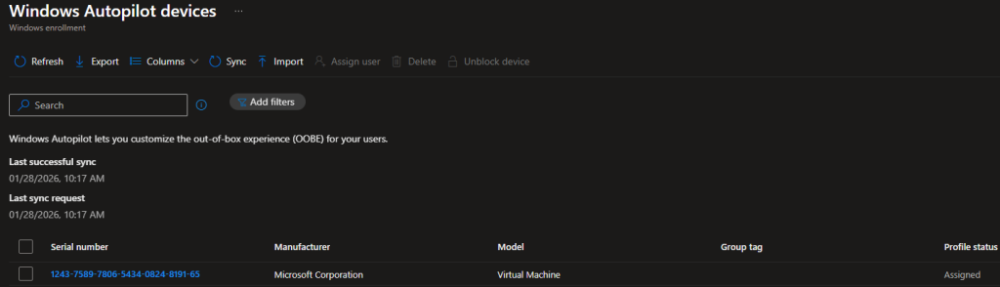
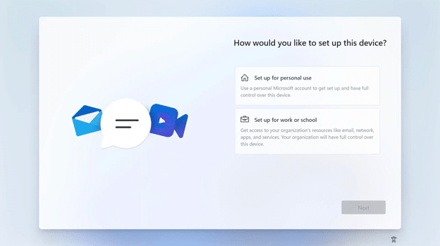
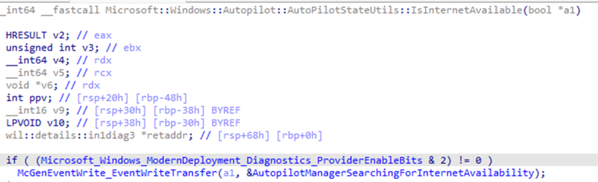
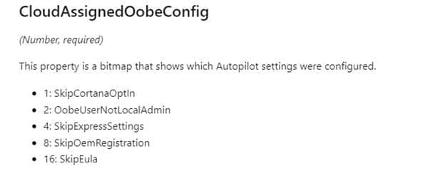
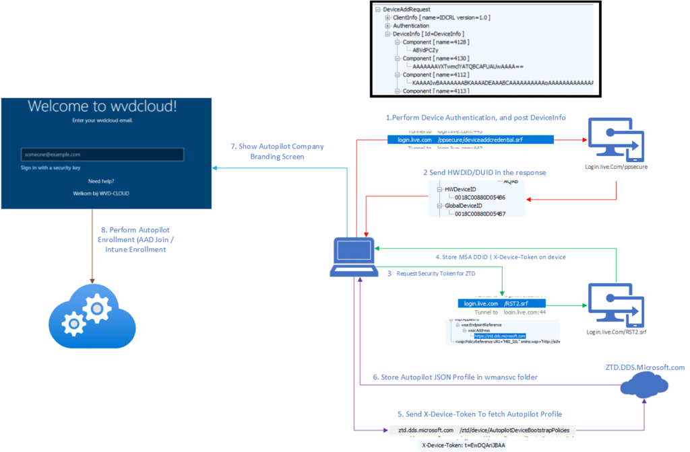
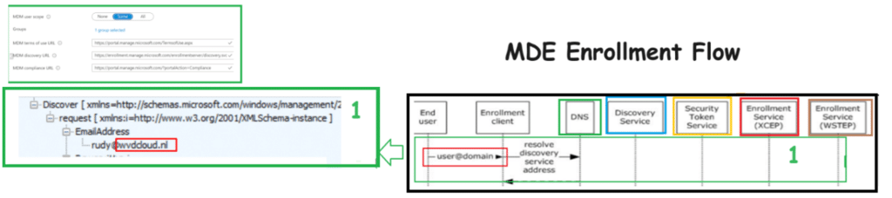
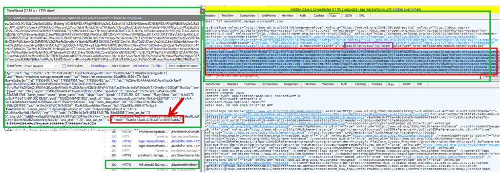
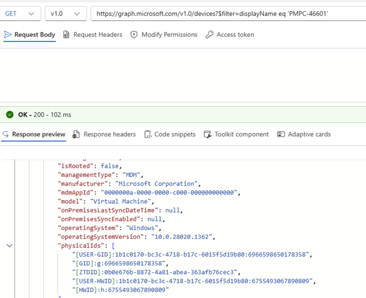

When a device suddenly shows the full Out-of-Box Experience (showing privacy screen/region/etc), most administrators come to the same conclusion. The Autopilot profile did NOT apply, so the device must NOT have been recognized as a corporate Autopilot device. That conclusion feels logical. The Autopilot profile is the only visible signal during setup. When it is present, Windows skips consumer screens, and the experience clearly looks enterprise. When it is missing, Windows looks personal again and shows the default OOBE flow. From there, it is easy to assume that enrollment should be blocked when personal devices are restricted.
That assumption is wrong. This blog explains why by following the device enrollment step by step. If you prefer to watch me talking about it… Check out our Patch N Rant on YouTube.
Introduction
Windows Autopilot is the supported way to onboard new Windows devices… To do so, we need to upload something that is called the hardware Hash. When the hardware hash is uploaded, and the corresponding Autopilot profile is assigned, the device is registered with the Autopilot service and classified as corporate at that moment.


That registration exists independently of whether the Autopilot profile is successfully downloaded during setup. What most people associate with Autopilot is the visible part we normally don’t see: The full setup experience. When the profile downloads, Windows suppresses those consumer-focused screens and moves directly into the organizational/corporate flow. When the Autopilot profile fails to be downloaded, the setup screen looks very generic (AKA not corporate) again. Almost as if it’s a personal device.


This visual change often leads to the wrong conclusion. If platform enrollment restrictions are configured to block personal devices, a device that shows the personal out-of-the-box questions should be blocked from enrollment.

In this scenario, even when the Autopilot failed to download, the MDM/ Intune enrollment still succeeded. Why? Well…When the device fails to download the Autopilot Profile, it does NOT mean the device is personal. It only changed how OOBE looked. Before diving in, let me explain what Autopilot really is…
What Windows Autopilot really is
On first boot, Windows tries to find its assigned Autopilot profile. That Autopilot profile, its job is to improve the Enrollment experience.

Its purpose is to skip or suppress specific Out of Box Experience screens such as consumer prompts, privacy questions, and regional setup steps. Once those OOBE instructions are applied, Windows moves on and asks you to log in.

From that point forward, the Autopilot profile has no further role. Identity registration and Entra/Intune enrollment decisions happen later and are not driven by the profile. Autopilot only affects how the first setup looks like. It does NOT decide whether a device is corporate or personal. Let me zoom into that even a bit more.
How the Autopilot profile is fetched
As soon as Windows detects internet connectivity during OOBE, the wman service attempts to determine whether the device is registered with Autopilot and whether a deployment profile is assigned.


To do so, it needs to talk to the Autopilot ZTD service and prove that it is the same device that was previously registered by its hardware hash. That proof is obtained by reaching out to login.live.com/rst2 to request a device security token (RST).

Once it retrieves the security token, that token is also cached locally in the system account.

The device token is commonly referenced through the headers when communicating with the ZTD service (x-device-token). It is tied to the uploaded hardware hash and allows the Autopilot service to recognize the device without any user identity being involved. When Windows contacts the Autopilot service with that x-device-token, the service checks whether a deployment profile is assigned and returns it if available.

If this request fails, because Autopilot service endpoints are unreachable, the device does NOT lose its Autopilot registration. What it loses is only the Autopilot profile instructions (cloudassignedoobeconfig) that control setup behavior.


The enrollment itself continues with a generic experience and shows the screens that the Autopilot Profile would normally suppress. So… even without the profile in place, the device still proceeds toward the Entra Join and prompts for credentials.


This is where the misunderstanding usually starts. A missing Autopilot profile changes the OOBE experience but NOT the device’s identity.
Entra Join and the transition to MDM
After the first stages of OOBE, with or without the Autopilot profile applied, Windows proceeds with Entra join as part of the same setup flow

The user signs in, the device object is created in Entra ID, and trust is established. Again… the Entra join does NOT depend on the Autopilot profile. If credentials are valid, the device joins Entra. As part of the Entra join flow, Windows also obtains the MDM enrollment token and the MDM service URLs. (The MDM enrollment URIs are inside the token)

During this MDM discovery phase, the service checks whether the user is in the MDM scope and of course if the user has a valid Intune license assigned.


Once this step completes, the device moves into MDM/Intune enrollment.
Enrollment Restrictions and the Autopilot Profile
Once Windows has the MDM URLs and enrollment token, it reaches out to the Intune enrollment service. This is the exact moment enrollment restrictions are evaluated. During this enrollment request, Windows hands over the device information to the Intune enrollment service. This includes the device identity established earlier and the ZTDID, which originates from the device ticket issued by login.live.com during the provisioning phase and is carried forward into MDM enrollment.


The ZTDID does not come from the Autopilot profile. It existed before setup started and survives regardless of whether the profile was downloaded. It represents the device physical identity and allows the service to match the enrolling device to the Autopilot registration.


This is the point where the service decides whether the device is corporate or personal. If personal devices are blocked, the presence of a valid ZTDID allows the device to be classified as corporate and proceed.

If the ZTDID is missing, the device is treated as personal, and enrollment is blocked, even if the user is licensed and discovery succeeded.

That decision is not based on the Autopilot profile. It is made silently during the enrollment request…So again.. the Autopilot profile does NOT decide if the device is corporate.
Blocking the Autopilot Service (ZTD)
Blocking Autopilot service endpoints (ztd.dds.microsoft.com) changes how the OOBE setup looks like, but it does NOT automatically change the device into a personal one. When the Autopilot service endpoints are unreachable, Windows cannot retrieve the Autopilot profile. With it, the enrollment continues without the OOBE instructions that suppress consumer OOBE screens. The experience looks generic, even when the device is corporate.
As long as login.live.com remains reachable, Windows can still establish its provisioning context. It can obtain a valid device ticket and retain the associated ZTDID that links the provisioning session back to the Autopilot registration created from the uploaded hardware hash. When the device later reaches MDM enrollment, Intune evaluates that provisioning context, not the setup experience. Because the device can still be linked to a trusted Autopilot registration, enrollment can succeed even when personal devices are blocked.
Blocking login.live.com is different (and stupid). When login.live.com is unreachable, Windows cannot obtain a valid device ticket. Without it, the provisioning identity chain cannot be established correctly. When the MDM enrollment is retried later on, the request reaches Intune without the context needed to link the device back to a trusted Autopilot registration. The failure happens BEFORE enrollment restrictions can even be evaluated. This is exactly why blocking login.live.com causes weird failures that look like Autopilot or Intune issues, but are actually they are caused by the missing “identity”. The device can no longer prove who it is or how it started.
Conclusion
When the Autopilot profile does not show up, the device can suddenly look personal during OOBE. You might see a random device name, the local Administrator account, and the normal setup screens. That is what happens when the ZTD service is not reachable and the Autopilot profile cannot be downloaded. But that does not automatically mean the device became personal.
The Autopilot profile controls how OOBE looks and which settings are applied during setup. If login.live.com is still reachable, the device can still get the device ticket it needs to prove who it is. That proof allows the Autopilot corporate state to be handed over during enrollment. That is also why blocking personal devices does not always block this scenario.
So the important difference is this: If the ZTD service is not reachable, the Autopilot experience can be missing. If the identity flow still works, the corporate registration can still be handed over to Intune.